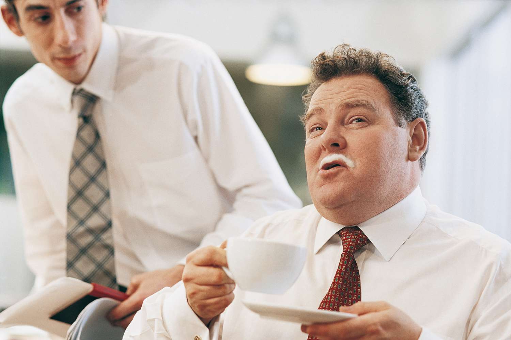
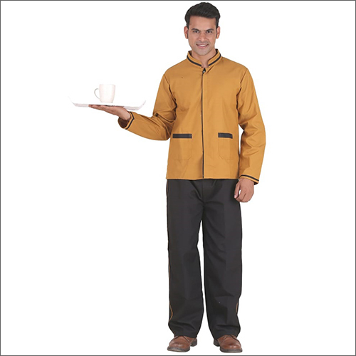

Um Lilju
Lilju hafði aldrei dottið í hug að hún yrði kokkur. En þegar hún sat í vefforritun einn daginn kom upp svaka hugmynd. Hún viðurkennir að það var ekki hennar hugmynd, heldur var það Óli kennari sem stakk uppá því fyrst. Svo einn góðan veðurdag, þegar Lilja situr við skólatölvuna sína fattar hún að köllunin sín hefur ávallt verið að verða kokkur og byrjaði hún þá fyrst á því að forrita síðu sem gæti komið sér vel ef einhver vildi gæða á mat hjá henni. Lilja tekur því engan heiður á Veitingastaðnum sínum heldur er það Óla að þakka að hver sem er getur nú snætt á afbragðs matargerð.
Starfsfólk
Lilja Örk
Eigandi
Skarphéðinn Georgsson
Rekstrarstjóri
Fjóla Ásmundsdóttir
Kokkur
Hans Einar Hansson
Þjónn
Jökull "Svali" Kárason
Umjónamaður þrifa